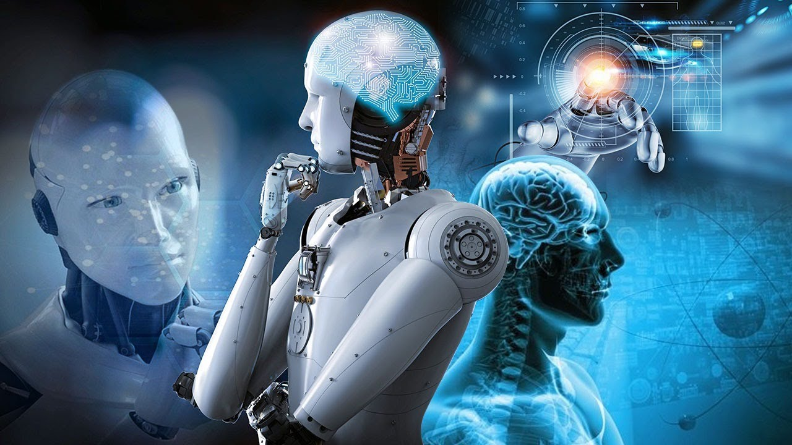

 Искусственный интеллект (ИИ) — это раздел компьютерных наук, который занимается созданием систем, способных выполнять задачи, требующие человеческого интеллекта.
Искусственный интеллект продолжает развиваться, открывая новые горизонты для человечества. Системы ИИ могут улучшить производительность в различных сферах, включая образование, где адаптивные учебные платформы помогут учиться индивидуально, и экологию, где ИИ поможет в анализе данных для устойчивого развития. Важно следить за этическими аспектами и потенциальными рисками, чтобы использовать ИИ в пользу общества.